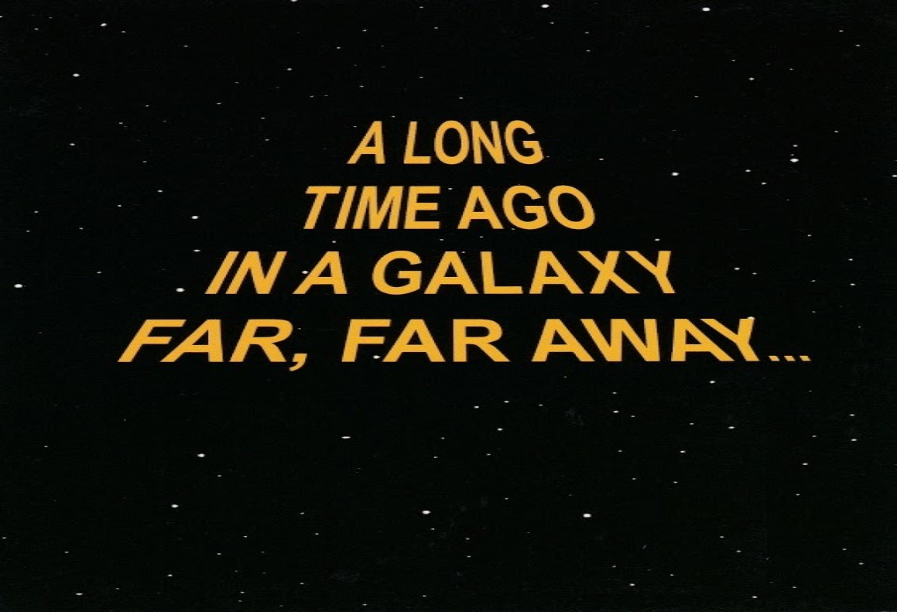

Blog (beta)
Everything that should know a beginner tester about testing and more

One small step for a tester...
A long time ago in a galaxy far, far away... The Millennium Falcon spacecraft had to emergence land on the planet QA-2020, and the reason was not an asteroid or solar wind but of course... it was a software bug!